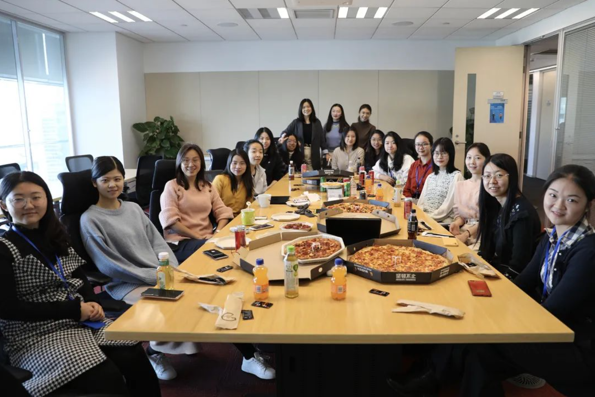

Haoyue Tang–Diversity and Inclusion Activities
Thoughts
Growing up as a female student in the field of computer engineering, through the inclusive teaching and mentoring activities by my advisors and co-authors, I am gradually gaining confidence, becoming brave when facing with research challenges and becomes a better self. It is my mission to promote diversity, ensure equality through inclusive teaching and mentoring throughout my career.
Ada Dialog
|  | During my internship at Microsoft Research, I was a frequent participant and have hosted the Ada Dialog. The goal is to strengthen the pipeline of women and underrepresented minority students in the field of computer science, providing them with communications and networking oppotunities to outstanding women and underrepresented minorities in the company. Media coverage can be found here. |
EECS Rising Stars Workshop
 |
I participated in the EECS Rising Stars Workshop at UT Austin 2022 and presented my work. Rising Stars is an intensive workshop for graduate students and postdocs with historically marginalized or underrepresented genders who are interested in pursuing academic careers in electrical engineering, computer science, and artificial intelligence and decision-making. |